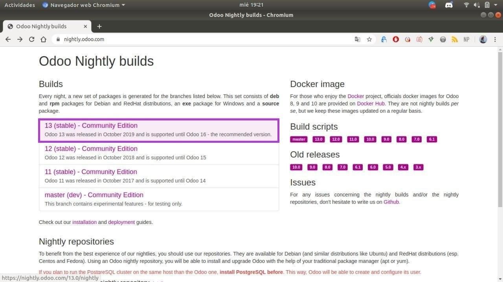
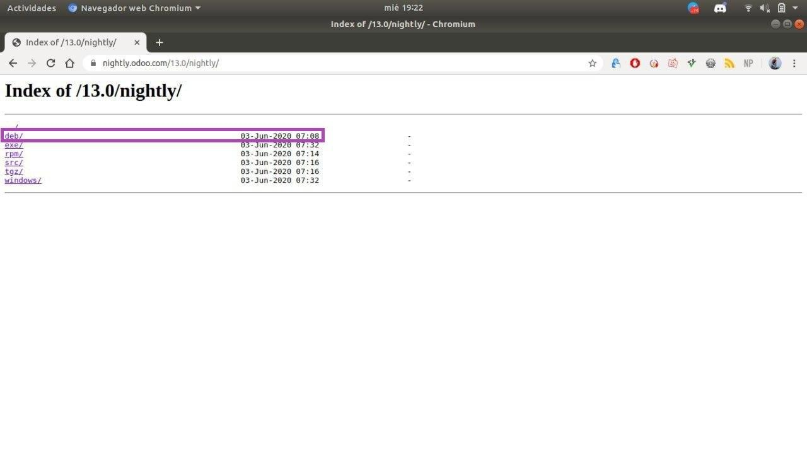
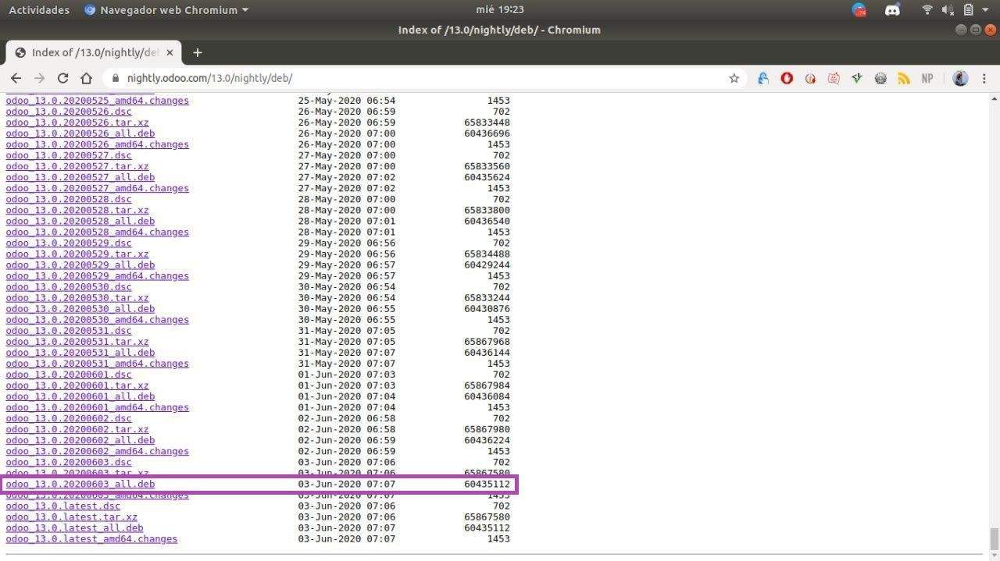

Primero debemos acceder a nightlyOdoo y seleccionar
la versión estable más actualizada.

Al seleccionar la versión más estable debemos seleccionar el tipo de archivo de descarga
para nuestro SO, en mi caso selecciono .deb para instalar en Ubuntu.

Tras seleccionar tipo de archivo, pulsamos en la version mas estable para iniciar la descarga.

Descarga Completada, acceda al siguiente paso para conocer la instalación.